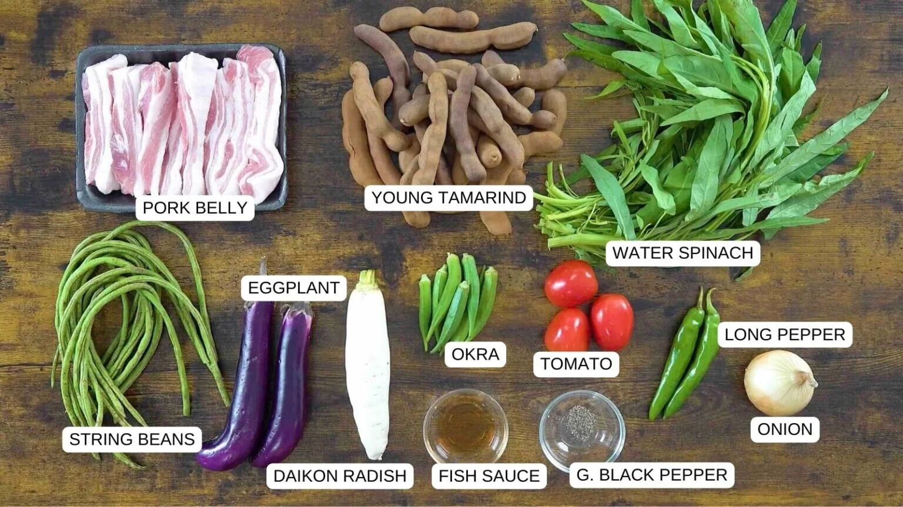
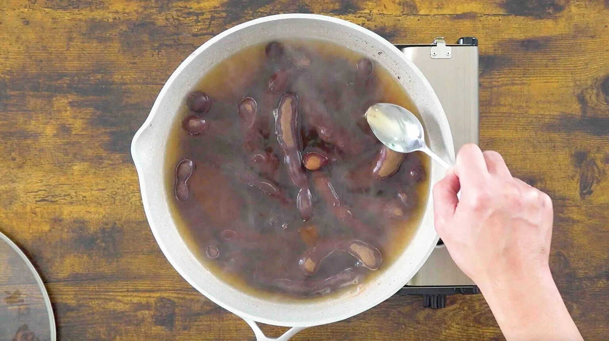
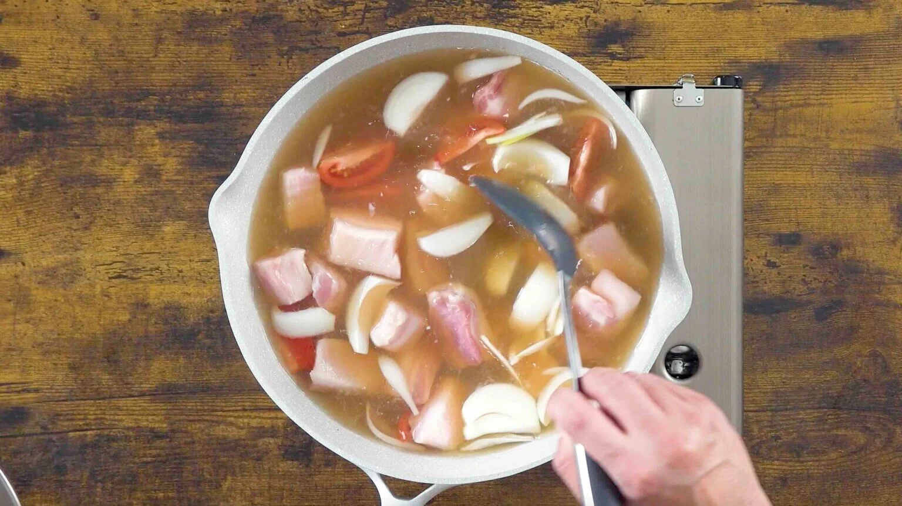
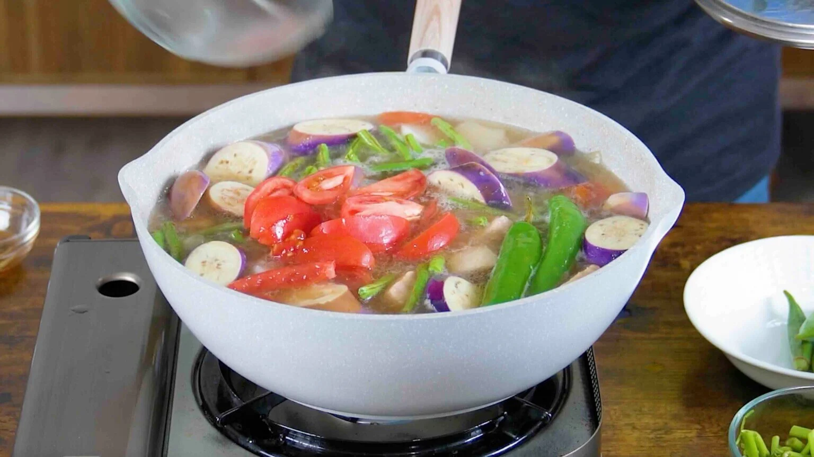
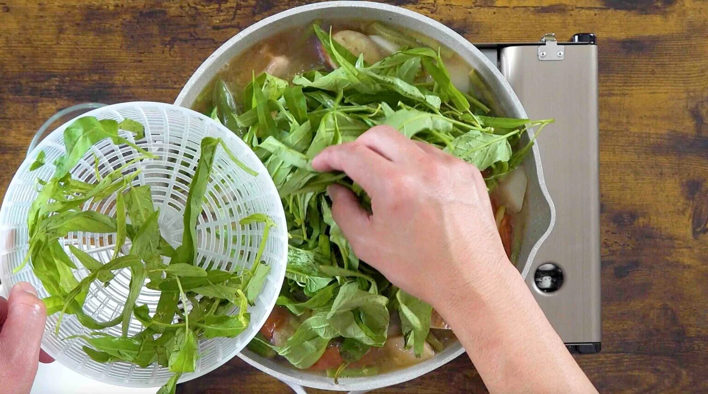
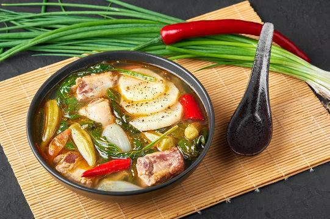

Step 1 of 6: Prepare Ingredients
Gather and chop all necessary ingredients. These include Pork Belly, String Beans, Eggplant, Daikon Radish, Okra, Water Spinach, Tomatoes, Long Pepper, Onions, Black Pepper, Fish Sauce, and your Young Tamarind
Step 2 of 6: Extract Tamarind Flavor
Boil fresh tamarind until the broth becomes sour enough.
Step 3 of 6: Cook the Meat
Add the meat to the tamarind broth and let it simmer.
Step 4 of 6: Add Vegetables
Add vegetables one at a time based on their cooking duration.
Step 5 of 6: Season and Finish
Season the soup to your liking and add delicate vegetables last.
Step 6 of 6: Enjoy!
Your Sinigang is ready to serve—enjoy your delicious meal!